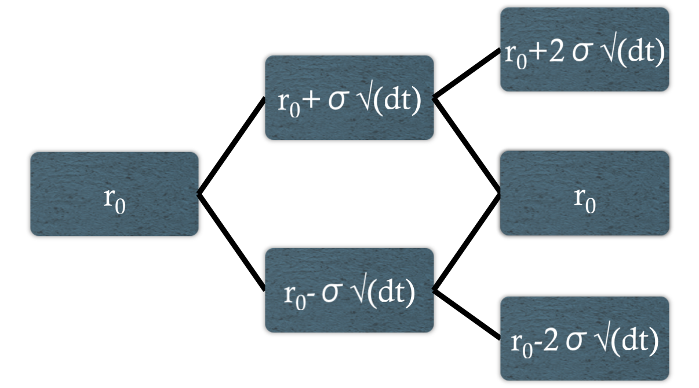
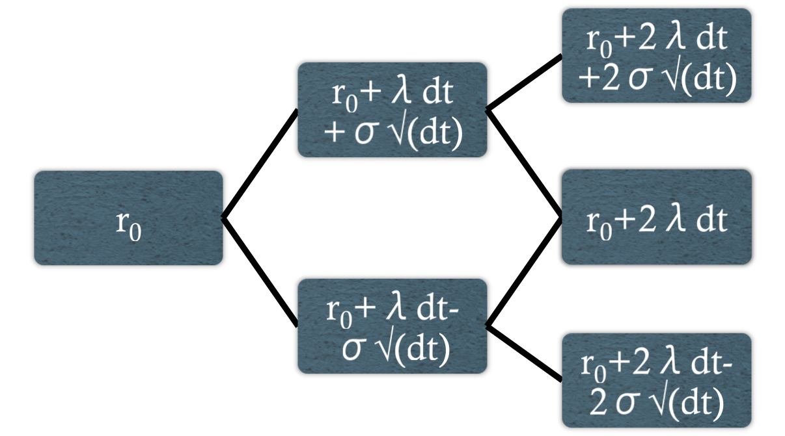
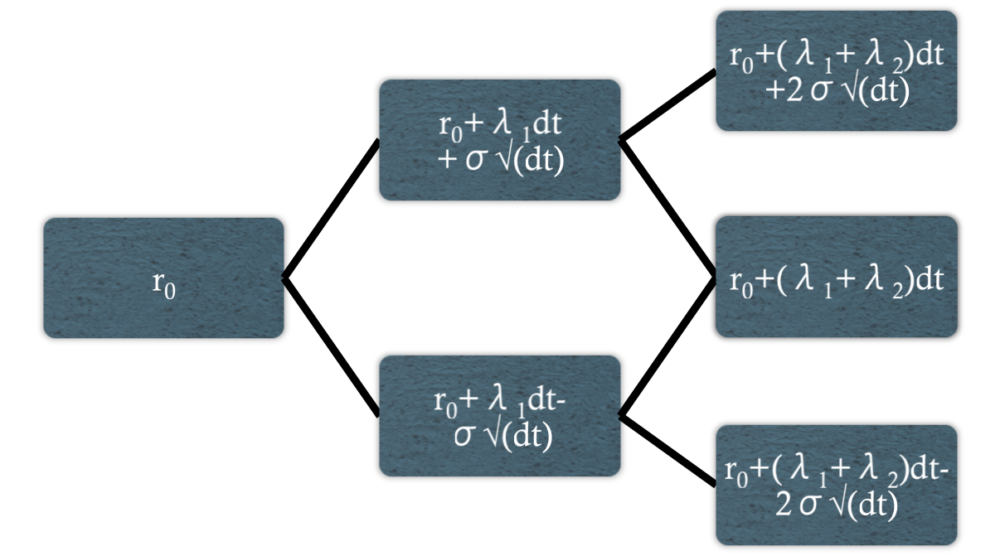

Chapter 5
The Art of Term Structure Models: Drift
Created for
Alchemists Academy
by
MacLane Wilkison
Model 1: Normal Distribution/No Drift
dr = σdw

Model 2: Drift and Risk Premium
dr = λdt + σdw

The Ho-Lee Model: Time-Dependent Drift
dr = λ
t
dt + σdw

The Vasicek Model: Mean Reversion
dr = k(θ-r)dt + σdw
Non-recombining rate tree
THE END
AlchemistsAcademy.com